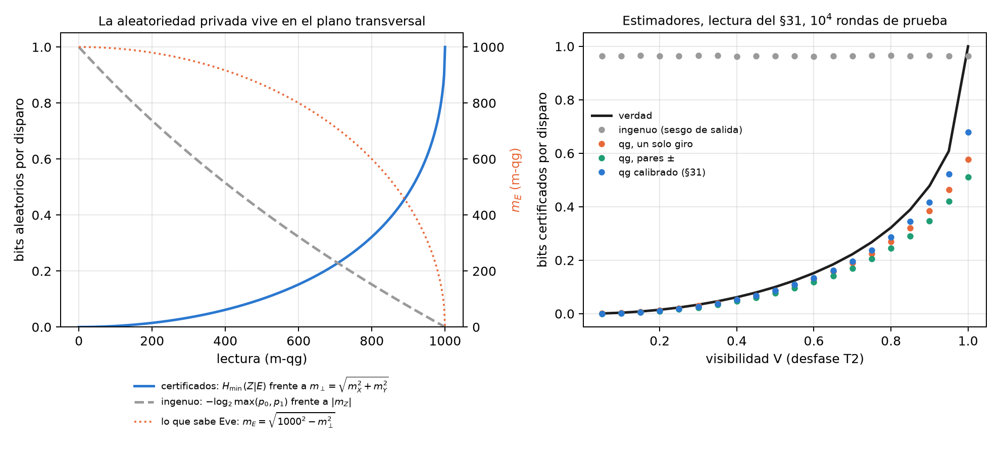
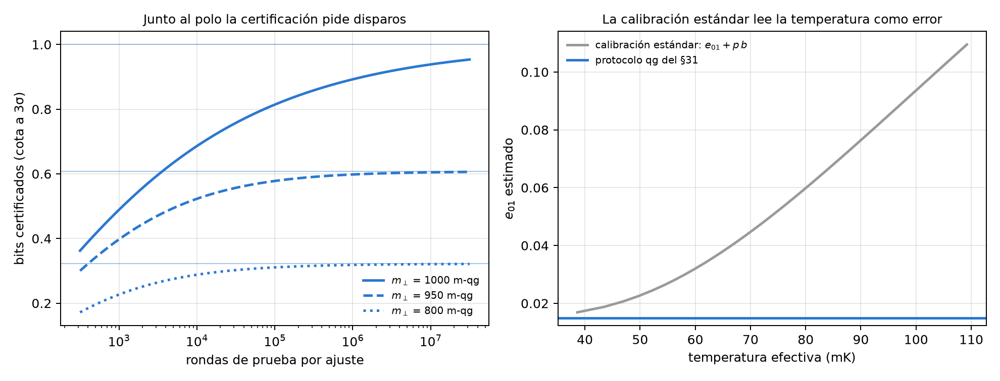
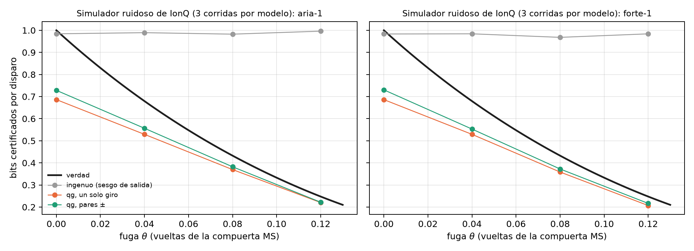

18 Números aleatorios certificados (QRNG) y auditoría de canales
Un generador cuántico de números aleatorios (QRNG) de un qubit es el experimento más simple del libro: preparar \(|+\rangle\), medir en Z, anotar el bit. El resultado es una moneda justa, y eso es lo que mide el análisis habitual. Pero una moneda justa no es lo mismo que una moneda privada. Si el qubit perdió coherencia, la salida sigue saliendo 50/50, y sin embargo alguien que tenga el entorno puede conocer cada bit de antemano. Este capítulo lee esa diferencia en la escala del capítulo 1. La salida vive en una lectura y la privacidad en las otras dos, y lo que sabe el adversario es una lectura más, la que le falta al estado para llegar a la esfera. El capítulo agrega la calibración de lectura que hace falta para no sobrestimar, y el mismo certificador frente a una fuga diseñada en el simulador de IonQ.
18.1 Desde la base: la salida y la privacidad son lecturas distintas
El qubit de la fuente tiene tres lecturas, \(m_X\), \(m_Y\) y \(m_Z\). La salida del QRNG es la medición en Z, y el análisis habitual sólo mira su sesgo: con \(p_0=(1000+m_Z)/2000\) certifica
\[ H_{\text{ingenuo}}=-\log_2\max(p_0,p_1)=-\log_2\frac{1000+|m_Z|}{2000} \]
bits por disparo, 1 bit cuando \(m_Z=0\). Pero \(m_Z=0\) lo da tanto \(|+\rangle\) como el estado completamente mezclado, y en el segundo caso no hay nada privado: el entorno guarda la otra mitad de la purificación y sabe qué salió.
Con la medición de confianza y un adversario (Eve) que tiene la purificación, los dos estados condicionales de Eve son puros y su solapamiento depende sólo del radio transversal \(r_\perp=\sqrt{qg_X^2+qg_Y^2}\). Por Helstrom, su probabilidad de adivinar es (notas, §41)
\[ P_{\text{adivinar}}=\frac{1+\sqrt{1-r_\perp^2}}{2},\qquad H_{\min}(Z|E)=-\log_2 P_{\text{adivinar}}. \]
En la escala del capítulo 1, esa probabilidad es una lectura más. Su valor en m-qg es
\[ m_E=1000\sqrt{1-r_\perp^2}=\sqrt{1000^2-m_X^2-m_Y^2}, \]
lo que le falta al radio transversal para llegar a la esfera, y su ángulo qang es \(\arcsin r_\perp\). La fórmula no depende de \(m_Z\). Un estado puro en el ecuador tiene \(m_\perp=1000\) y deja a Eve en \(m_E=0\): adivina con probabilidad 1/2, y el bit es privado. Un estado que perdió coherencia tiene \(m_\perp<1000\), y la longitud que perdió es lo que sabe Eve (Figura 18.1, izquierda).
| \(m_\perp\) (m-qg) | 1000 | 990 | 950 | 900 | 800 | 500 | 200 |
|---|---|---|---|---|---|---|---|
| lo que sabe Eve, \(m_E\) (m-qg) | 0 | 141 | 312 | 436 | 600 | 866 | 980 |
| bits privados por disparo | 1,000 | 0,810 | 0,608 | 0,478 | 0,322 | 0,100 | 0,015 |
La forma de la fórmula tiene una consecuencia práctica. Diez m-qg menos de radio transversal, de 1000 a 990, le dan a Eve 141 m-qg y le quitan a la fuente 0,19 bits por disparo. Es el polo del capítulo 1 visto desde el otro lado: cerca de \(m_\perp=1000\), la raíz tiene pendiente infinita.
18.2 El análisis por sesgo de salida falla; la lectura qg no
El certificador qg estima \(m_X\) y \(m_Y\) con rondas de prueba (giros que llevan X e Y a la base de medición) y usa una cota inferior de \(r_\perp\) a 3σ. Las notas (§41) comparan cuatro estimadores con \(10^4\) rondas de prueba por ajuste, 300 corridas por escenario y la lectura asimétrica del §31 (\(e_{01}=0{,}015\), \(e_{10}=0{,}04\)):
- ingenuo: el sesgo de la salida;
- qg, un solo giro: \(m_X\) y \(m_Y\) medidos con una rotación cada uno;
- qg, pares ±: cada eje con las dos rotaciones, de modo que el corrimiento de la lectura se cancela;
- qg calibrado: los pares ±, divididos por el factor de escala \(b\) de la lectura medido con el protocolo del §31.
| escenario | \(m_\perp\) | verdad | ingenuo | qg, un giro | qg, pares ± | qg calibrado |
|---|---|---|---|---|---|---|
| \(\lvert+\rangle\) ideal | 1000 | 1,000 | 0,965 (0) | 0,578 (0) | 0,512 (0) | 0,681 (0) |
| T2: \(V=0{,}8\) | 800 | 0,322 | 0,964 (1,00) | 0,269 (0) | 0,245 (0) | 0,286 (0) |
| T2: \(V=0{,}5\) | 500 | 0,100 | 0,965 (1,00) | 0,087 (0) | 0,077 (0) | 0,087 (0) |
| T2: \(V=0{,}2\) | 200 | 0,015 | 0,965 (1,00) | 0,013 (0,07) | 0,009 (0) | 0,010 (0) |
| térmico \(p=0{,}05\), \(V=0{,}9\) | 810 | 0,334 | 0,965 (1,00) | 0,279 (0) | 0,254 (0) | 0,297 (0) |
| lectura muy asimétrica, \(e_{10}=0{,}10\), \(V=0{,}95\) | 950 | 0,608 | 0,876 (1,00) | 0,498 (0) | 0,341 (0) | 0,513 (0) |
- El estimador habitual es inseguro siempre que el estado no sea puro. Con \(V=0{,}2\) certifica 0,97 bits por disparo donde sólo 0,015 son privados, en el 100 % de las corridas. El desfase y la mezcla térmica dejan la salida sin sesgo.
- El estimador qg con pares ± es seguro en todas las corridas, porque el corrimiento \(a\) de la lectura se cancela. Con un solo giro, el corrimiento infla \(r_\perp\) y sobrestima en el 7 % de las corridas con \(V=0{,}2\). Es decir, el “100 % frente a 0 %” de seguridad vale para el estimador con pares, no para cualquier lectura qg.
- Calibrar \(b\) con el §31 recupera de 10 a 50 % más bits certificados (0,286 frente a 0,245 con \(V=0{,}8\); 0,513 frente a 0,341 con la lectura muy asimétrica), sin perder seguridad.

18.3 Junto al polo la certificación pide disparos
Una cota a 3σ con \(n\) rondas por ajuste baja el radio en \(3000/\sqrt n\) m-qg, y junto al polo eso cuesta caro. Para una fuente perfecta, sin error de lectura:
| rondas de prueba | \(10^3\) | \(10^4\) | \(10^5\) | \(10^6\) | \(10^7\) |
|---|---|---|---|---|---|
| cota de \(m_\perp\) (m-qg) | 905 | 970 | 991 | 997 | 999 |
| lo que se le concede a Eve, \(m_E\) (m-qg) | 425 | 243 | 137 | 77 | 44 |
| bits certificados (verdad: 1) | 0,489 | 0,686 | 0,814 | 0,892 | 0,939 |
| con \(m_\perp=950\) (verdad: 0,608) | 0,397 | 0,523 | 0,578 | 0,598 | 0,605 |
Con la lectura del §31 y el certificador calibrado, la simulación da 0,68, 0,81 y 0,89 bits con \(10^4\), \(10^5\) y \(10^6\) rondas, lo mismo. Lejos del polo la cota converge rápido: con \(m_\perp=950\), \(10^5\) rondas ya dan el 95 % de la verdad (Figura 18.2, izquierda). Una fuente casi perfecta es la más cara de certificar.
18.4 La calibración de lectura: temperatura o error del detector
El certificador calibrado divide por el factor de escala \(b\) de la lectura, y la pregunta es de dónde sale \(b\). En la escala del capítulo 1 la lectura es afín (notas, §31):
\[ m_{\text{medida}}=1000\,a+b\,m,\qquad a=e_{10}-e_{01},\quad b=1-e_{01}-e_{10}. \]
Un qubit real arranca con población térmica \(p\), es decir con \(m_{\text{eq}}=1000(1-2p)=1000\tanh(hf/2k_BT_{\text{ef}})\). La calibración estándar mide “\(|0\rangle\)” y “\(|1\rangle\)”, que en verdad son el estado térmico y X sobre él: dos lecturas para tres incógnitas (\(a\), \(b\), \(m_{\text{eq}}\)). Supone \(m_{\text{eq}}=1000\) y carga la población térmica a la lectura: informa \(e_{01}+p\,b\) y \(e_{10}+p\,b\), exactamente.
| \(p\) | \(T_{\text{ef}}\) (5 GHz) | \(m_{\text{eq}}\) (m-qg) | \(e_{01}\) estándar | \(e_{01}\) protocolo qg (§31) |
|---|---|---|---|---|
| 0 | 0 mK | 1000 | 0,0150 | 0,0149 |
| 0,01 | 52 mK | 980 | 0,0245 | 0,0151 |
| 0,03 | 69 mK | 940 | 0,0434 | 0,0148 |
| 0,08 | 98 mK | 840 | 0,0906 | 0,0152 |
El protocolo qg agrega la tercera ecuación. Mide, lee de nuevo y usa la covarianza de las dos lecturas, \(V=b^2(1-qg_{\text{eq}}^2)\), que separa \(b\) de \(m_{\text{eq}}\) en forma cerrada. Según las notas, recupera la temperatura con ±1 mK desde 52 mK. El capítulo 27 lo desarrolla. Aquí importa su consecuencia para el QRNG: calibrar con la suite estándar vuelve inseguro al certificador. Con una fuente térmica (\(V=0{,}9\)), dividir por la \(b\) estándar, que es \(b(1-2p)\), devuelve \(r_\perp\) sin la contracción térmica y certifica de más.
| \(p\) | verdad | calibrado con \(b\) estándar | calibrado con \(b\) verdadera |
|---|---|---|---|
| 0,01 | 0,443 | 0,418 (0,01 inseguras) | 0,390 (0) |
| 0,03 | 0,383 | 0,414 (1,00 inseguras) | 0,339 (0) |
| 0,05 | 0,334 | 0,413 (1,00 inseguras) | 0,297 (0) |

18.5 En el simulador ruidoso de IonQ, con una fuga
En las notas (§42) la fuga es real: un ion \(q\) es la fuente y un segundo ion \(e\) hace de entorno. Una interacción MS\((0,0,\theta)\) le deja a \(e\) aprender el valor X de \(q\), y la salida se lee en X. Sigue siendo una moneda justa, pero la aleatoriedad privada cae a la fórmula de arriba con \(r=|\cos2\pi\theta|\) (X y Z intercambiados). Las rondas de prueba miden ±Z y ±Y, y dos circuitos calibran la lectura. Todo está en compuertas nativas (GPI, GPI2, MS), con 5 pares por circuito, \(10^4\) muestras por ajuste y tres repeticiones por modelo de ruido, en el simulador gratuito. No se envió nada a una QPU.
| \(\theta\) (vueltas) | verdad | ingenuo | qg, un giro | qg, pares ± | \(m_\perp\) medido / ideal |
|---|---|---|---|---|---|
| 0 (sin fuga) | 1,000 | 0,98 | 0,69 | 0,73 | 1000 / 1000 |
| 0,04 | 0,680 | 0,99 / 0,98 | 0,53 | 0,56 / 0,55 | 954 / 969 |
| 0,08 | 0,433 | 0,98 / 0,97 | 0,37 / 0,36 | 0,38 / 0,37 | 866 / 876 |
| 0,12 | 0,248 | 1,00 / 0,98 | 0,22 / 0,21 | 0,22 | 721 / 729 |
- El estimador ingenuo no ve la fuga: 0,97–1,00 bits por disparo en todas las corridas, por encima de la verdad en el 100 % de las corridas con \(\theta>0\). Con \(\theta=0{,}12\) certifica cuatro veces la aleatoriedad privada.
- El estimador qg es seguro en las 24 celdas (corrida × \(\theta\)) y captura el 81–90 % de la verdad cuando hay fuga, y el 73 % sin ella, por el polo de la sección anterior.
- La calibración no agrega nada aquí. La lectura del simulador es casi perfecta (\(b=0{,}9998\)–\(1{,}0000\), \(|a|\le2\cdot10^{-4}\)). La ganancia de 10–50 % necesita errores de lectura como los del hardware, y este es un límite del modelo de ruido que sólo una QPU puede revisar.
- El ruido de la compuerta se cuenta como privacidad perdida: el \(m_\perp\) medido queda 1–2 % por debajo del ideal, que es el error de la MS. Es correcto que sea así, porque el certificador no puede saber quién se llevó esa longitud.

18.6 Lo que queda pendiente
No hay corrida en hardware. La prueba que falta es un QRNG en un dispositivo con errores de lectura reales, donde la calibración del §31 debería mostrar su ganancia de 10–50 %. Es un QRNG que depende del dispositivo (medición de confianza, rondas independientes e idénticas), no aleatoriedad independiente del dispositivo. Y la fuga del §42 es una interacción diseñada, no la mejor estrategia de un adversario.
18.7 Sin qang y con qang
| acción | sin qang | con qang | diferencia |
|---|---|---|---|
| certificar bits por el sesgo de salida | \(-\log_2\max(p_0,p_1)\) | lo mismo en \(m_Z\) | ninguna: los dos fallan igual, 100 % inseguro con desfase |
| certificar bits privados | \(H_{\min}(Z\mid E)\) de Helstrom con la purificación | \(m_E=\sqrt{1000^2-m_\perp^2}\): lo que sabe Eve es la longitud que falta | equivalente en la cuenta (la fórmula es estándar); a favor en la lectura: la privacidad está en el plano transversal y se mide con dos giros |
| cuántas rondas de prueba hacen falta | propagación de errores sobre \(H_{\min}\) | el polo del capítulo 1: 10 m-qg de radio le dan 141 m-qg a Eve | a favor, modesto: explica de un vistazo por qué la fuente perfecta es la más cara |
| calibrar la lectura | dos circuitos; la temperatura se lee como error | lectura afín y una tercera ecuación (§31) | a favor: evita un certificador inseguro (100 % de corridas con \(p\ge0{,}03\)) y recupera 10–50 % de bits |
| detectar una fuga (IonQ simulado) | el sesgo no la ve | seguro en 24 de 24 celdas, 81–90 % de la verdad | a favor del estimador transversal, que es estándar en QRNG dependientes del dispositivo |
Balance. La cota de entropía es la de siempre, y un experto en QRNG ya mide la coherencia transversal. Lo que aporta la base del capítulo 1 es leerla: lo que sabe el adversario es una lectura en m-qg, \(m_E\), la longitud que le falta al estado para llegar a la esfera. De ahí salen dos cosas que se ven a simple vista, la caída de la certificación cerca del polo y el peligro de calibrar la lectura con dos circuitos. La segunda es la ganancia más concreta del capítulo, y se debe al protocolo del §31, no a la unidad.
18.8 En código
import math
import sys
sys.path.insert(0, "examples")
import qrng_qg_certified as Q
m_x, m_y = 800.0, 0.0 # lecturas transversales (m-qg)
m_perp = math.hypot(m_x, m_y)
m_e = math.sqrt(1000**2 - m_perp**2) # 600: lo que sabe Eve
-math.log2((1000 + m_e) / 2000) # 0.322 bits privados por disparo
Q.h_min_certified(m_perp / 1000) # 0.322, la misma cuenta18.9 Resumen
- La salida de un QRNG de un qubit es la lectura \(m_Z\); su privacidad es el radio transversal \(m_\perp\). Lo que sabe un adversario con la purificación es una lectura más, \(m_E=\sqrt{1000^2-m_\perp^2}\).
- El análisis por sesgo de salida certifica casi 1 bit por disparo aunque el estado esté casi mezclado: inseguro en el 100 % de las corridas con desfase o mezcla térmica. El estimador qg con pares ± es seguro en todas.
- Cerca del polo la certificación es cara: 10 m-qg de radio valen 0,19 bits, y una fuente perfecta da 0,69 bits certificados con \(10^4\) rondas y 0,89 con \(10^6\).
- La calibración estándar lee la temperatura como error de lectura, y usarla vuelve inseguro al certificador. El protocolo del §31 la separa y recupera 10–50 % de bits.
- En el simulador de IonQ, con una fuga diseñada, el estimador ingenuo no la ve y el qg es seguro en todas las celdas.